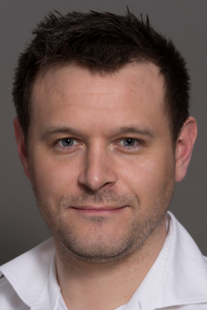

| Schedule and Program | ||
|---|---|---|
| Time | Topic | Speaker |
08:30 - 09:00 |
Arrival and coffee |
|
09:00 - 09:15 |
Welcome and introduction of participants |
All participants |
09:15 - 09:30 |
User-centered data collections for research on digital democracy |
Sebastian Stier, Philipp Lorenz-Spreen, Lisa Oswald |
09:30 - 10:00 |
Interactive session: what data do you need for your research? |
All participants |
10:00 - 10:20 |
Data donations |
Zoltan Kmetty |
10:20 - 10:40 |
Mobile data collections |
David Grüning |
10:40 - 11:00 |
Coffee break |
|
11:00 - 11:20 |
Platform interventions and experiments |
Philipp Lorenz-Spreen, Lisa Oswald |
11:20 - 11:50 |
CSS Infrastructures: National Internet Observatory and GESIS |
Pranav Goel, Kaicheng Yan, Sebastian Stier |
11:50 - 12:30 |
Structured discussion: what software and infrastructures does the field need? |
All participants |
Logistics
The tutorial will take place on Wednesday, July 17, 2024 from 9:00 AM to 12:30 PM in Room Houston: Bodek Lounge.
Motivation
As we are in the middle of a crucial election year in the U.S. and Europe, political forces like populist and radical parties or movements or authoritarian governments abroad and societal processes such as polarization or declining trust in parliaments pose threats to the legitimacy of democratic institutions. Academic research on the role of digital media in shaping these processes and democracy at-large is striving. Nonetheless, our research areas and analysis potential are oftentimes confined to the data provided by platforms. For democracy research in particular, it is important to link digital behavioral data with individual-level information on demographics and variables like party identification, political trust or evaluations of other societal groups. While getting individual-level data has been an important issue ever since, platforms have restricted data access further. As potential remedies provided by the EU’s Digital Services Act are not yet foreseeable, researchers have to devise their own solutions for collecting relevant digital behavioral data in the “Post-API Age”. In many academic institutions, research software for data collection like web tracking via browser add-ons, mobile apps or data donations are being developed. Currently, there is the risk that these initiatives remain unconnected and work is duplicated. The workshop aims to bring together research groups working on new technical solutions and innovative approaches for studying digital democracy.
Rationale of the tutorial
This workshop will help build a community that brings together various leading research teams and researchers at different career levels. The workshop is situated at the intersection of democracy research, software development and computational social science, contributing to a joint understanding of the research needs, data gaps and identification of synergies. To create valuable research data and increase independence from platforms, the academic community needs to build sustainable research infrastructures and ultimately develop joint conceptual and measurement standards, e.g. for the variable of information exposure. The IC2S2 is the ideal venue for this goal as it brings together researchers from various disciplinary backgrounds, with expertise in substantive research questions, software engineering, open-source development and open science practices, many of whom share a research interest in digital media and democracy, broadly conceived. Participants will learn about innovative approaches in collecting and analyzing digital behavioral data, the most pressing themes in research on (digital) democracy and will be able to articulate and identify joint infrastructure demands. The teams working on new methodological approaches can gather valuable feedback at the workshop, learn more about and create synergies with the work of other teams.
Program
Our goal is to provide a venue in which participants will engage with the topic through various formats: presentations of experts on the field, collaborative breakouts, and plenary discussion.
We will have at least five input presentations followed by respective Q&A sessions where recent innovative approaches for collecting data and studying digital media and democracy will be presented and discussed. We will move into smaller groups to work on cross-cutting themes that emerge across presentations. We will critically discuss the applicability of different approaches for specific research questions, the remaining blind spots of the proposed data collection approaches and how these could complement each other.
The tentative schedule can be found below (all times are Philadelphia local time, EDT/GMT-4).
Speakers

Zoltán Kmetty, Ph.D., is an Associate Professor in the Sociology department at the Eötvös Loránd University Faculty of Social Sciences in Budapest, Hungary. He has diverse research interests, including political sociology, network studies, and suicide research. He is an expert in methodology, survey design, and quantitative analysis. In several projects, Zoltán has collected various types of digital behavioral data via data donation approaches.
TBD
David Grüning is a Doctoral Researcher at GESIS – Leibniz Institute for the Social Sciences. David is Chair of the Science Board at Prosocial Design Network (PDN) and Lead Scientist at one sec. His research focuses on biases in in self-reports and more generally fundamental theory of personality assessment. Further, David researches cognition-related personality constructs and social-emotional competencies.
TBD
Pranav Goel is a Postdoctoral Research Associate at the Lazer Lab at Northeastern University’s Network Science Institute. His research interests broadly span computational social science and natural language processing, viewing language as a social phenomenon and text data as a potent digital trace of societal dynamics. He is particularly interested in the sociopolitical phenomenon of framing (including agenda-setting) in news and social media.
TBD
Organizers
Northeastern University, Boston